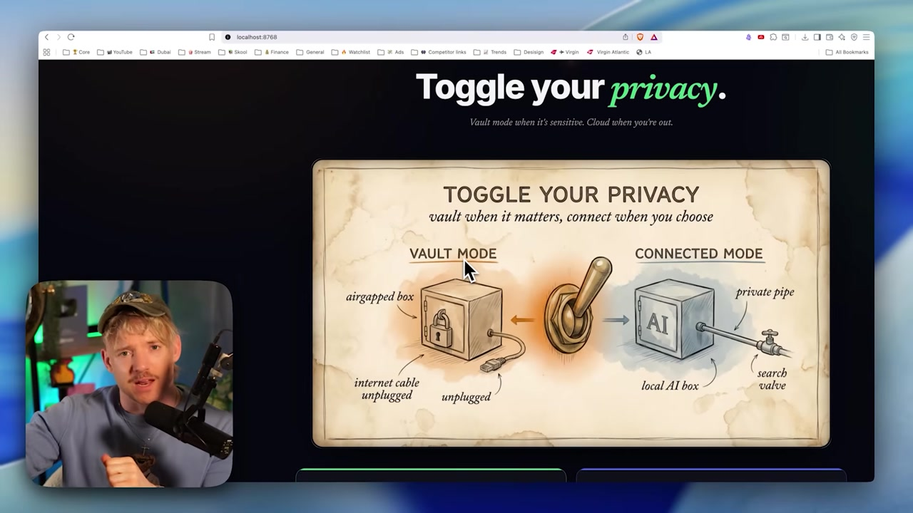

🗄️ Los tres modos: Vault, Connected y Cloud
La división en porcentajes del módulo anterior ahora se vuelve concreta. Hermes resume todo el trade-off en tres modos con un interruptor: Vault (todo privado y local), Connected (el punto medio) y Cloud (calidad máxima). En este módulo de cierre del recorrido aprenderás qué hace cada modo, cuándo usar cada uno y cómo alternar entre ellos dinámicamente.

🗄️ Vault: privado, todo local
O Vault y es el modo del extremo de privacidad. En él, el agente se queda airgapped — como si hubieras arrancado el cable de Internet de la pared. Todo funciona con tu modelo local: no se envía nada, no se busca nada afuera, no se filtra nada. Es la bóveda: lo que entra se queda, y nada sale. Este es el modo para datos que bajo ninguna circunstancia pueden salir de tu máquina.
¿Nuevo por aquí? "Airgapped" (aislado físicamente) es un sistema sin ninguna conexión a internet ni a otras redes: está aislado físicamente. Es el estándar de oro de la seguridad: si no hay una vía de salida, los datos no pueden filtrarse. El modo Vault simula exactamente esto por software.
🔒 Qué garantiza Vault
- •Cero tráfico de red: funciona incluso sin conexión, en un avión o en un búnker.
- •Solo responde el modelo local; no hay nube ni búsquedas externas.
- •Privacidad por diseño, no por promesa.
Conceptos clave
El modo airgapped: todo local, nada sale.
Sistema aislado, sin conexión a internet.
El extremo del eje: ninguna salida posible.
Sin conexión, Vault sigue respondiendo.
🔗 Connected: rendimiento, el punto medio
O Connected y es el equilibrio. El modelo sigue siendo tu modelo local, pero ahora el agente obtiene un "private pipe" (un canal privado) y la capacidad de hacer búsquedas. En otras palabras: la inteligencia sigue siendo tuya y se ejecuta en tu máquina, pero el agente puede buscar información reciente cuando la necesita, sin enviar toda la tarea a la nube.
📊 Qué cambia de Vault a Connected
- •El modelo sigue siendo LOCAL: el razonamiento no sale de la máquina.
- •Gana un private pipe + búsqueda — el agente puede traer datos actuales.
- •Más útil para tareas que necesitan información del mundo, con privacidad sólida.
¿Nuevo por aquí? "Private pipe" es un canal de salida controlado: el agente busca lo que necesita por una vía restringida, en lugar de enviar todo a la nube. Piensa en Connected como "Vault con una ventanita": la mayor parte se queda en casa y solo sale lo estrictamente necesario.
Conceptos clave
Modelo local + private pipe + búsqueda: el punto medio.
Canal de salida controlado para buscar solo lo necesario.
El agente trae información actualizada sin delegar el razonamiento.
Alta privacidad con más utilidad que el Vault puro.
☁️ Nube: calidad por encima de la privacidad
O Cloud y es el extremo opuesto de Vault. Aquí, conscientemente conecta la nube para usar un modelo de frontera cuando la calidad de la respuesta importa más que mantener los datos en casa. Es el modo del "problema complicado": ese 5% de las tareas en las que quieres el mejor cerebro disponible, aunque sepas que los datos van a transmitirse.
✓ Cuándo tiene sentido la nube
- ✓La tarea exige la mejor respuesta posible.
- ✓El dato NO es sensible (público o ya expuesto).
- ✓El problema está fuera del alcance del modelo local.
- ✓Elegiste A PROPÓSITO, sabiendo cuál era la compensación.
✗ Cuándo NO usar Cloud
- ✗Datos de clientes, salud o IP propietario.
- ✗Por pereza, cuando lo local ya lo resolvería.
- ✗En un entorno regulado que prohíbe la salida de los datos.
- ✗Cuando quieres costo $0 y trabajar sin conexión.
Conceptos clave
Activa la nube por calidad; es el extremo opuesto del Vault.
El mejor cerebro disponible, a costa de la privacidad.
Cloud es una decisión deliberada, no la opción predeterminada.
La parte de las tareas en las que el último punto de calidad importa.
🩺 Cuándo usar Vault: datos que no pueden salir
Conviene tener una regla clara para el caso más crítico. El Vault no es un lujo, es una necesidad siempre que, por ley o contrato, el dato no pueda salir de tu máquina. Si tienes dudas, la pregunta es sencilla: «si esto se filtrara, ¿sería un problema grave?». Si la respuesta es sí, Vault.
Datos de clientes
Información de terceros que eres responsable de proteger — Vault.
Salud e IP propia
Notas de salud, secretos de negocios, código confidencial — Vault.
Sin internet
Avión, zona remota, conexión inestable: Vault es el único modo que siempre funciona.
⚠️ El error que debes evitar
Enviar datos sensibles a Cloud «solo esta vez» porque era más cómodo. En un entorno regulado esto puede ser ilegal, y no se puede deshacer una vez que los datos salieron. Si tienes dudas sobre la sensibilidad, la opción segura por defecto es el Vault.
Conceptos clave
Si tienes dudas sobre la sensibilidad, empieza por Vault.
Una vez que el dato sale, no hay forma de recuperarlo.
Los entornos regulados se vuelven simples cuando los datos no circulan.
"¿Sería grave si se filtrara?" Si sí, Vault.
🔄 Alternar dinámicamente: "envíalo al privado"
El poder real está en cambiar de modo al instante, según cambia la tarea. No eliges un modo para siempre: enrutas cada solicitud. En medio de una conversación puedes decir literalmente algo como "manda este al privado" y el agente pasa el trabajo al Vault. El SVG de abajo es el árbol de decisión que vas a usar.
El árbol: primero pregunta si el dato es sensible (sí → Vault). Si no, pregunta si la tarea requiere mejor respuesta (sí → Cloud; no → Connected). Ese es exactamente el enrutamiento que configurarás en la práctica de la Ruta 3.
Consejo práctico: no necesitas decidirlo todo al principio. Comienza en Connected (buen valor predeterminado) y, cuando aparezcan datos sensibles, di "envíalo a privado" para que vaya al Vault; cuando aparezca un problema difícil y no sensible, cambia a Cloud. El modo se adapta a la tarea, no al revés.
Conceptos clave
Cambiar de modo sobre la marcha, según la tarea.
Comando en lenguaje natural que envía el trabajo al Vault.
¿Sensible? → Vault. ¿La mejor respuesta? → Cloud. Si no → Connected.
Un buen punto de partida; ajústalo para los extremos cuando haga falta.
🤖 Agentes en segundo plano 24/7 a $0
La consecuencia más poderosa de combinar Vault (privacidad) con $0 por uso (precio): puedes dejar agentes funcionando todo el tiempo. Como cada llamada es gratuita, no hay un medidor que te asuste: un agente puede estar de guardia las 24 horas del día, los siete días de la semana, procesando tareas en segundo plano, sin sorpresas en la factura.
♻️ Por qué solo lo local permite esto
- •En la nube, un agente 24/7 acumularía una factura enorme por token.
- •En local, el costo marginal es ~$0: solo energía y el hardware que ya es tuyo.
- •Y puede funcionar en Vault: automatización constante Y privacidad al mismo tiempo.
🧭 Adónde te lleva esto
Terminas la Trilha 1 con el mapa mental completo: por qué usar modelos locales, el vocabulario, Ollama, el contexto y los parámetros, la compensación y, ahora, los tres modos. En la práctica, montar estos agentes 24/7 en Vault es un tema de proyecto de la Trilha 3 (Projeto 5). Antes de eso, la Trilha 2 te pone manos a la obra: instalar, descargar modelos y conectarlo todo a Hermes.
Conceptos clave
Agente que funciona en segundo plano, sin que tengas que estar al mando.
Atención constante porque cada llamada local cuesta cero.
El próximo uso no agrega ningún costo: solo energía.
Agente constante funcionando en Vault, sin que salgan datos.
Autocomprobación (opcional): vas a trabajar con datos de clientes (sensibles) en una tarea que el modelo local resuelve bien. ¿Qué modo usas?
🎯 Resumen del módulo y de la Trilha 1
¡Completaste la Trilha 1 — Fundamentos! 🎉
Ahora tienes el mapa mental completo: por qué usar modelos locales, el vocabulario (LLM/agente/SO), Ollama y los modelos abiertos, el contexto y los parámetros, el trade-off y los tres modos. El próximo recorrido es práctico.